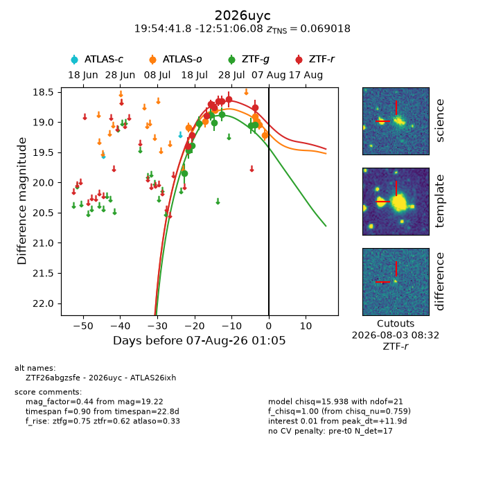
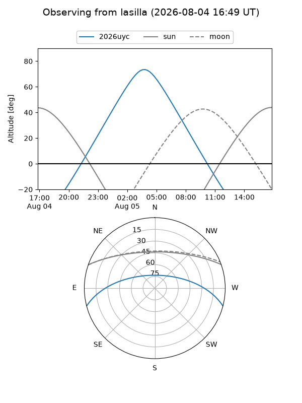
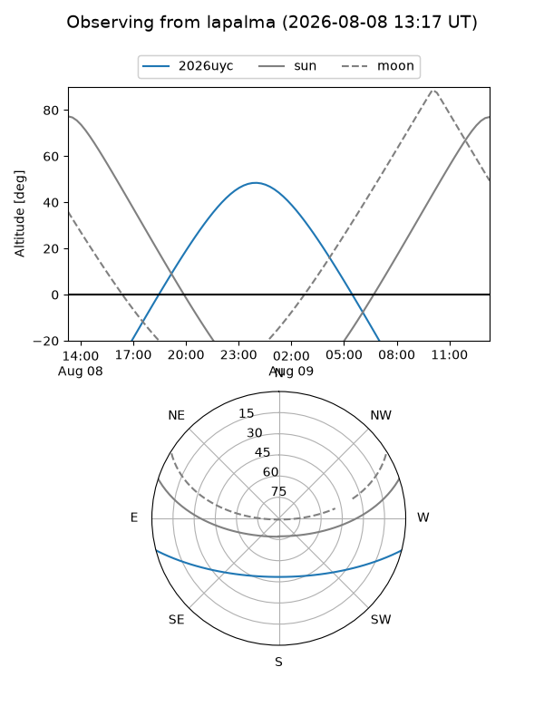
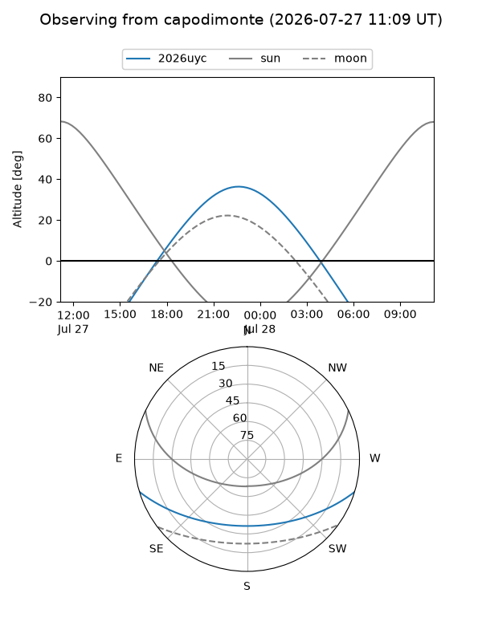
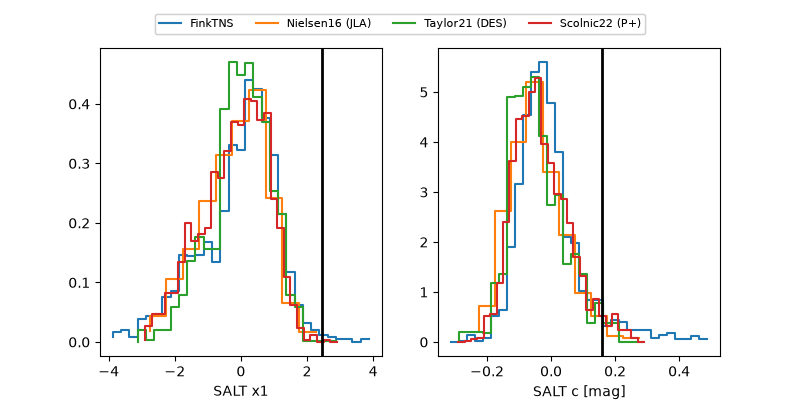

2026uyc
Target 2026uyc at 2026-08-07 01:08
Aliases and brokers:
FINK-ZTF: ztf.fink-portal.org/ZTF26abgzsfe
Lasair-ZTF: lasair-ztf.lsst.ac.uk/objects/ZTF26abgzsfe
ALeRCE-ZTF: alerce.online/object/ZTF26abgzsfe
YSE-PZ: ziggy.ucolick.org/yse/transient_detail/2026uyc
TNS name: wis-tns.org/object/2026uyc
Direct TNS query: direct search
alt names
ZTF26abgzsfe (ztf,fink_ztf)
2026uyc (tns,yse)
ATLAS26ixh (atlas)
Coordinates:
equatorial (ra, dec) = 298.6744,-12.85169
equatorial (HMS+DMS) = 19:54:41.84,-12:51:06.08
galactic (l, b) = (28.2513,-19.74874)
Flags:
TNS type: SN Ia
TNS redshift: 0.0690
peak dt: +11.9
Photometry:
last atlaso=19.22, ztfg=19.04, ztfr=18.75
7 atlaso, 9 ztfg, 9 ztfr detections
Lightcurve

Visibility



Additional plots
